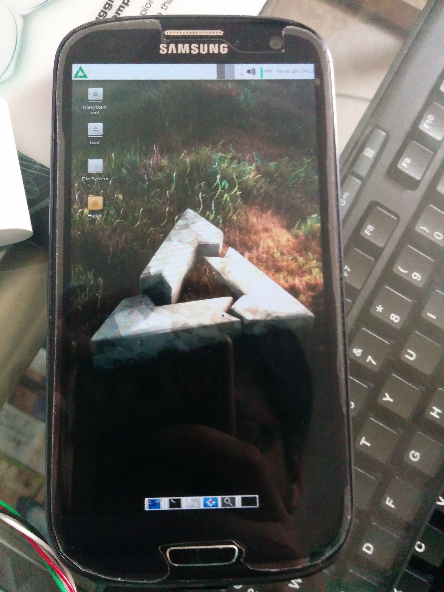
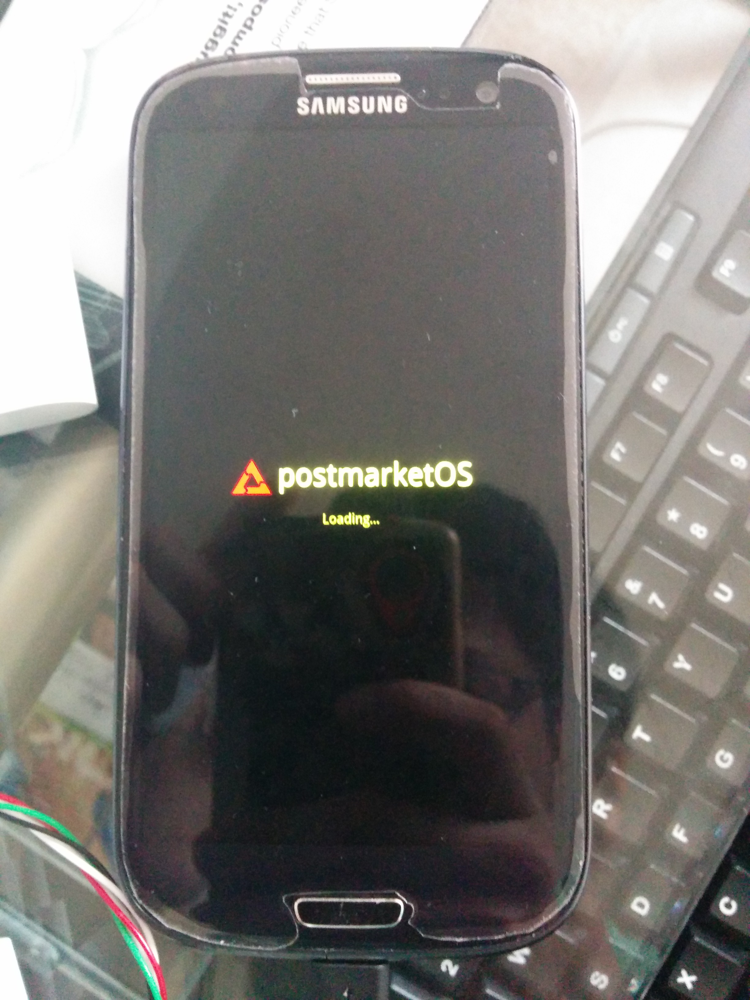

Samsung Galaxy SIII SCH-I535 (samsung-d2vzw)
Jump to navigation
Jump to search
|
 XFCE4 Desktop running | |
| Manufacturer | Samsung |
|---|---|
| Name | Galaxy S III (Verizon) |
| Codename | samsung-d2vzw |
| Released | 2012 |
| Category | testing |
| Original software | Android 4.0 |
| Hardware | |
| Chipset | Qualcomm Snapdragon S4 Plus (MSM8960) |
| CPU | Dual-core Krait 1.5 GHz |
| GPU | Adreno 225 |
| Display | 720x1280 AMOLED |
| Storage | 16 GB, 32 GB |
| Memory | 2 GB |
| Architecture | armv7 |
{kind=link}
| USB Networking |
Works
|
|---|---|
| Flashing |
Works
|
| Touchscreen |
Works
|
| Display |
Works
|
| WiFi |
Partial
|
| FDE | |
| Mainline | |
| Battery |
Works
|
| 3D Acceleration |
Works
|
| Audio |
Partial
|
| Bluetooth | |
| Camera | |
| GPS |
Broken
|
| Mobile data |
Broken
|
| SMS |
Broken
|
| Calls |
Broken
|
| USB OTG |
Works
|
| NFC | |
| Accelerometer |
Works
|
|---|---|
| Magnetometer | |
| Ambient Light | |
| Proximity | |
| Hall Effect | |
| Barometer | |
| Power Sensor | |
| Camera Flash | |
|---|---|
| Keyboard | |
| Touchpad | |
| USB-A | |
| HDMI/DP | |
| Ir TX | |
| Ir RX | |
| Stylus | |
| Haptics | |
| Ethernet | |
| FOSS bootloader | |
Contents
Contributors
Maintainer(s)
Users owning this device
How to enter flash mode
Set phone to ODIN mode
1. Turn off phone 2. Connect USB cable 3. Hold VOLUME_DOWN + HOME + POWER until you get Warning!! screen 4. Push VOLUME_UP to continue to ODIN mode screen
Installation
Step 1: Flash the system to an SD card
| Note: You can technically flash postmarketOS to your internal storage instead of an SD card, but there's no easy way to do this on samsung-d2vzw at the moment |
Start by flashing postmarketOS onto an SD card. Follow the usual bootstrap process, but select samsung-d2vzw as the device.
Step 2: Enter ODIN mode
To enter ODIN mode, follow these steps:
1. Turn off phone 3. Hold Volume Down + Home + Power until you get Warning!! screen 2. Connect USB cable 4. Push Volume up to continue to ODIN mode screen
Step 3: Flash the kernel via ODIN mode
| Note: You can also use pmbootstrap flasher flash_kernel as a shortcut to this process. |
Now, use Heimdall to flash the image with -boot at the end to your boot partition. Make sure that you extract it before flashing it (the downloaded file is a compressed .tar.xz archive).
Flash it with this command:
heimdall flash --BOOT <Decompressed image filename> --verbose
Note that it's important to write BOOT in all capitalised letters, as otherwise you will get an error about the partition not being found in the PIT.
After that's done, your device should now automatically reboot into postmarketOS! The results should be similar to the image below: 
{kind=link}